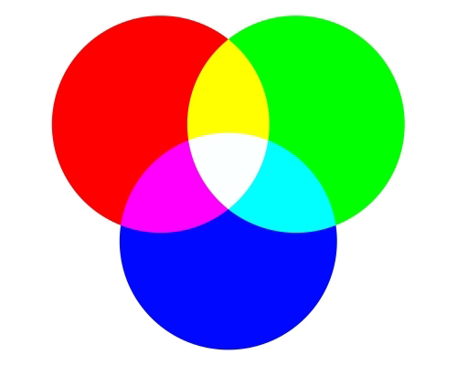

Algemeen
 Op de computer zijn ook kleuren te zien. Die kleuren worden weergegeven in RGB, dat staat voor Rood, Groen en Blauw. Om allle verschillede kleuren te maken, meng je als het ware de rode, groene en blauwe kleuren. Je moet kiezen tussen een getal van 0 tot 255. Als je groene en rood mengt krijg je geel en als je dat ook nog eens mengt met blauw, krijg je wit. Door meer van een bepaalde kleur te krijgen kan je meer kleur toevoegen en moet je een hogere waarde invoegen. Als je wil experimenteren met kleuren uitzoeken, moet je op deze link klikken.
255, waarom?
Als je kan kiezen tussen 0 en 255, dan heb je (toevallig) 256 mogelijkheden. 256 is niet zomaar bedacht,